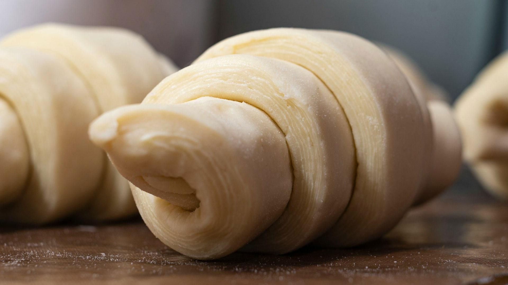

Aktuelne cene domaćih kiflica i štrudli. Domaće kiflice koštaju od 900 do 1200 RSD po kg.

Cene su izražene u dinarima (RSD). Cena domaćih kiflica je od 900 do 1200 RSD po kg, u zavisnosti od punjenja. Jedan kilogram ima oko 30 punjenih kiflica (oko 35 praznih), što je okvirno od 26 do 40 RSD po komadu. Detaljnije o vrstama pročitajte na stranici domaće kiflice.
Mekane i sočne domaće kiflice pravljene po tradicionalnom receptu.
Mekane kiflice punjene kvalitetnim sirom.
Mekane kiflice punjene šunkom i sirom.
Mekane kiflice punjene kulenom.
Slatke kiflice punjene ukusnim eurokremom.
Sočne kiflice punjene domaćim džemom od kajsija.
Klasične kiflice bez punjenja, idealne uz obrok.
Sočne štrudle sa makom koje se tope u ustima.
Tradicionalna štrudla sa bogatim punjenjem od maka.
Štrudla sa kombinacijom maka i sočnih višanja.
Posna varijanta štrudle sa makom, bez jaja i mlečnih proizvoda.
Bogate štrudle sa orasima po receptu naših baka.
Tradicionalna štrudla sa bogatim punjenjem od oraha.
Štrudla sa orasima i dodatkom domaćeg meda za poseban ukus.
Posna varijanta štrudle sa orasima, bez jaja i mlečnih proizvoda.
Posebne ponude i popusti za veće porudžbine.
2kg kiflica sa sirom + 2kg štrudle po izboru
3kg kiflica (mešavina) + 4kg štrudli (mešavina)
Za porudžbine preko 10kg
Kontaktirajte nas telefonom ili putem kontakt forme i naručite naše proizvode već danas!
Cena domaćih kiflica je od 900 do 1200 RSD po kg. Prazne kiflice su 900 RSD, sa sirom i džemom 1000 RSD, sa eurokremom 1100 RSD, a sa šunkom i sirom ili kulenom 1200 RSD po kg. Vrste kiflica pogledajte na stranici domaće kiflice.
U jednom kilogramu ima oko 30 punjenih kiflica, odnosno oko 35 praznih kiflica.
Za porudžbine preko 10 kg odobravamo 15% popusta na ukupnu cenu. Postoje i paketi: Porodični paket (2 kg kiflica sa sirom i 2 kg štrudle po izboru) za 3600 RSD i Slavski paket (3 kg kiflica i 4 kg štrudli) za 6200 RSD.
Minimalna porudžbina je 1000 RSD.
Za porudžbine preko 2500 RSD dostava je besplatna na teritoriji celog Beograda.
Svake subote na pijaci u bloku 44 možete naći naše proizvode i kupiti manje količine.